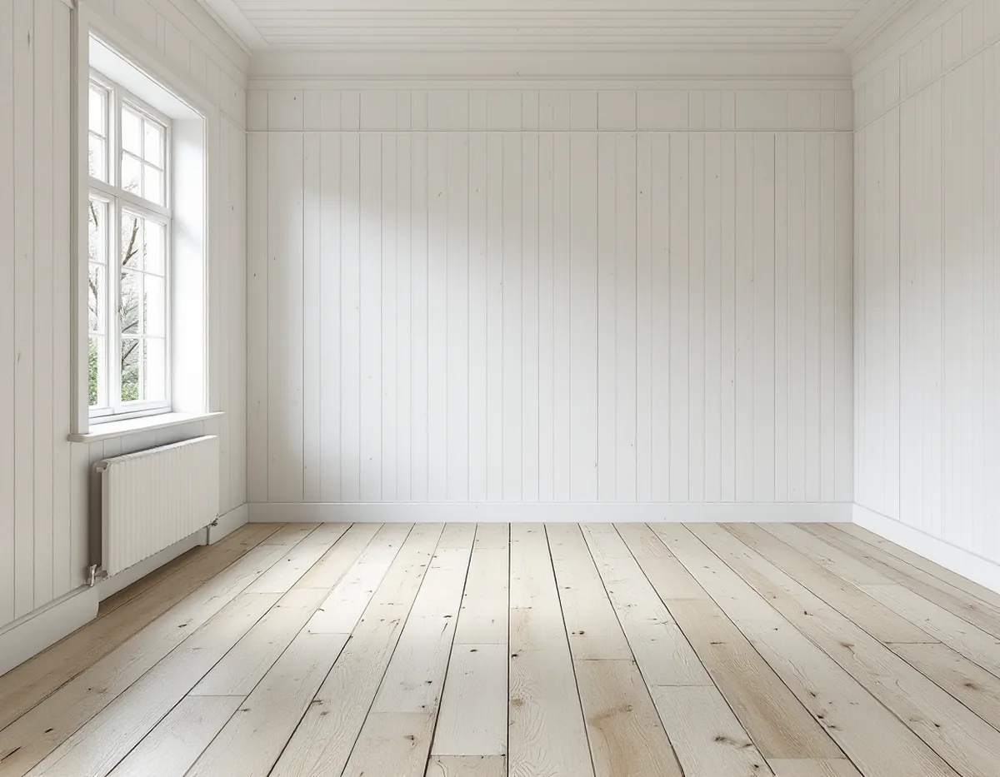
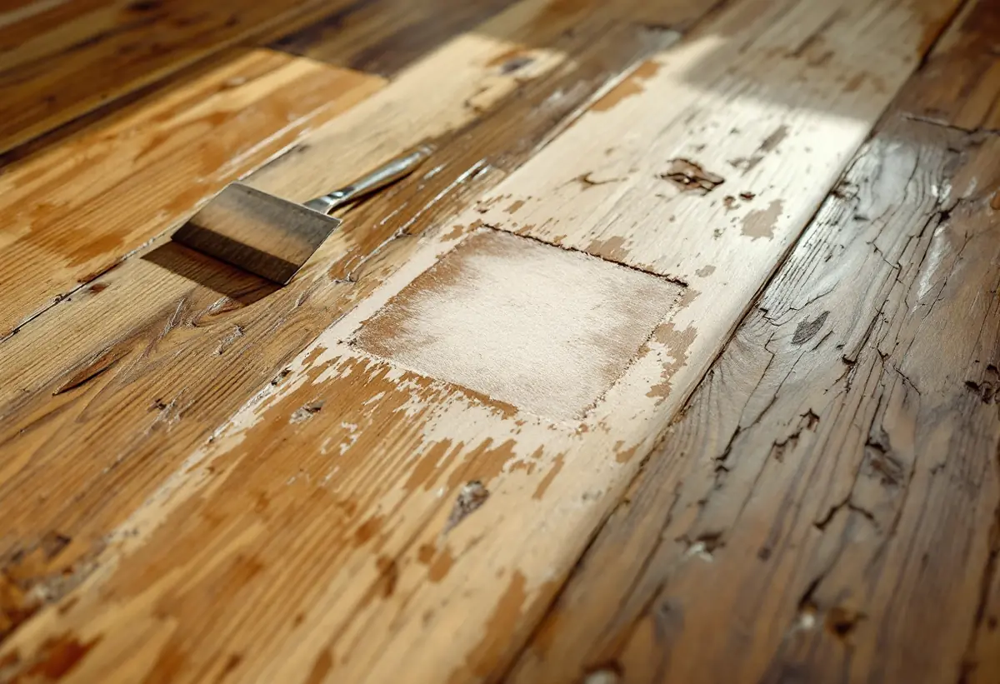

Platsbesök
Vi ser efter om golvet är målat eller fernissat och hur tjocka tiljorna är.
Ett gammalt plankgolv kan ha flera lager färg eller en brunfärgad fernissa som har spruckit. Att köra en stor slipmaskin rakt över det är inte självklart bästa vägen: vissa färger sätter igen slippappret, färgen sitter kvar i springorna och golvets patina försvinner. Geal Entreprenad AB slipar och ytbehandlar trägolv i villor och lägenheter i Sundbyberg, och på målade och fernissade golv provar vi först om ytan går att ta bort på ett skonsammare sätt.

Sundbybergs stads miljöprogram för Duvbo berättar att föreningen Egna Hem bildades 1898 i syfte att skapa egna hem för arbetare. Året därpå köpte man egendomen Dufvebol och upprättade en stadsplan med 325 tomter. Duvbo villastad växte snabbt fram som en av landets första egnahemsmiljöer, och 1924 utökades området med ytterligare 98 villatomter.
Husen är framför allt byggda vid sekelskiftet 1900 och under 1920-talet, och senare tillkom slätputsade hus under 1930- och 40-talen. Både de äldre och de yngre husen är uppförda i två våningar på höga socklar. Riksantikvarieämbetet pekade 1987 ut Duvbo som riksintresse för kulturmiljövården.
Miljöprogrammet beskriver området och husens yttre, men Boverket påpekar att förvanskningsförbudet för särskilt värdefulla byggnader gäller vid alla ändringar, både exteriört och interiört. Det är inget förändringsförbud, men värt att tänka på innan ett originalgolv slipas ned.

Svenska Byggnadsvårdsföreningen skriver att det är svårt att få bort färg restlöst från ett målat plankgolv, eftersom färgen har runnit ned mellan tiljorna. En del blandar lim och fint sågspån för att fylla hålen, men det kan spricka när träet rör sig. Annars får färgresterna sicklas bort efter slipningen. Ett mellanalternativ är att behandla det slipade golvet med vit lasur, kalksåpning eller vit pigmenterad olja, så att resterna inte syns så mycket. Ett sista alternativ är att måla om.
I ett annat svar varnar föreningen för att vissa färgsorter sätter igen slipbanden på maskinerna. Ett skonsammare sätt är färgborttagningsmedel eller en färgborttagningslampa, som innebär brandrisk, och att sedan sickla och hyvla bort det som är kvar. Det ger enligt föreningen också en mer motståndskraftig yta än slipning.
Ska golvet målas på nytt hjälper det att veta vad som sitter där. Plastfärg flagnar i stora flagor med skarpa kanter, medan linoljefärg normalt slits jämnare. Inför ommålning råder föreningen att undvika stora slipmaskiner som slipar bort de mjuka ojämnheter som ger gamla golv liv. Om målning med linoljefärg finns det mer under målare i Sundbyberg.
Om ett brunfärgat, fernissat grangolv med sprucken yta råder föreningen att lägga på ren såpa i ett dygn eller längre. Börja med en liten provyta, plasta in och se om fernissan löser sig. Sedan sicklas såpan och fernissan av och golvet såpskuras. Normalt menas en outspädd flytande såpa, men föreningen skriver att det finns de som vittnat om problem: rester av den basiska såpan kan stanna i träets porer och i vissa fall göra en senare fernissa eller oljemålning kladdig. Det är därför klokt att fråga tillverkaren vilken underbehandling de rekommenderar.
Om ett golv i stället ska fernissas brunt igen beskriver föreningen ett standardrecept: 10 procent järnoxidbrunt torrpigment blandat direkt i fernissan. Hål efter gamla spikar lagas bäst med trälim och plugg, helst av furu i ett furugolv, som spikas ned, sågas av och putsas.
Om breda plankgolv från början av 1900-talet skriver föreningen att gammal färg och fernissa normalt kan sicklas bort. Är tiljorna tjocka går golvet att slipa, men då försvinner också patinan och historien. Hyvling ger en vackrare och mer motståndskraftig yta, även om handhyvling är ett grannlaga arbete.
Springorna växlar med årstiderna: stora på senvintern och små på sensommaren. Ett sätt att minska dem är att limma in smala lister som hyvlas till golvnivå, gärna av frodvuxet virke som tål att tryckas ihop lite. Efter ett par års vård med såpskurning brukar randigheten enligt föreningen försvinna. Ska golvet i stället bytas finns det mer under golvläggning.
Vi ser efter om golvet är målat eller fernissat och hur tjocka tiljorna är.
En mindre yta provas med såpa eller färgborttagning innan metoden bestäms.
Borttagning, lagning, slipning och ytbehandling står som egna poster.
Färg och fernissa sicklas, löses med såpa eller slipas, efter vad provet visade.
Spikhål pluggas och stora springor får ilimmade lister.
Såpa, fernissa, olja eller linoljefärg läggs på.
Skatteverket räknar slipning av golv som rotarbete i ett småhus som används som bostad och i en bostadsrätt där du har underhållsansvaret enligt stadgarna. Såpa, fernissa och pigment räknas som material.
Avdraget är 30 procent av arbetskostnaden, högst 50 000 kr per person och år och högst 75 000 kr tillsammans med rutavdrag. Material och resor ger inget avdrag. Geal drar avdraget direkt på fakturan.
Hur många lager färg eller fernissa som sitter på golvet, vilken metod provytan visar, hur mycket som behöver lagas och vilken ytbehandling du väljer. Efter ett gratis platsbesök får du ett skriftligt kostnadsförslag.
Parkett, trägolv, klinker och slipning.
Golvläggning i Stockholm →Takbyte, takbesiktning och plåtarbeten.
Takläggare i Sundbyberg →Ventilationen, OVK och Duvbo.
Badrumsrenovering i Sundbyberg →Nytt hus, träd och regler i Duvbo.
Byggföretag i Sundbyberg →Panel och puts på Duvbos villor.
Fasadrenovering i Sundbyberg →Duvbo, flerbostadshusen och lovet.
Fönsterbyte i Sundbyberg →Duvbos villor och stadens lägenhetskök.
Köksrenovering i Sundbyberg →Lamellhus, kulörbyte och bostadsrätt.
Målare i Sundbyberg →Altan, pergola och staket enligt stadens guide.
Snickare i Sundbyberg →Ny tapet i äldre lägenheter.
Tapetsering i Sundbyberg →Duvbo, träden och riktlinjerna.
Tillbyggnad i Sundbyberg →